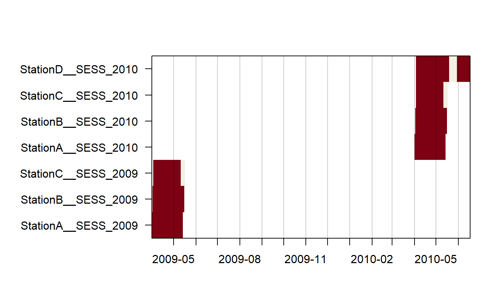

3. Extracting Data from Camera Trapping Images, creating occupancy & secr input
Juergen Niedballa (camtrapr@gmail.com)
2020-02-24
Source:vignettes/camtrapr3.Rmd
camtrapr3.RmdTabulating species and individual records: the recordTable functions
There are 2 function to tabulate species records after identification of species from images:
-
recordTabletabulates records of all images after species-level identification and -
recordTableIndividualtabulates individuals of one species.
Nevertheless, the underlying idea is the same. For each image, the date and time it was taken are read from the image’s Exif metadata using ExifTool. Species or individual ID are read from the directory structure or image metadata (see vignette “Species and Individual Identification”).
recordTable: tabulating species records
recordTable is typically run after identifying species from images. It reads species IDs from the directory structure the images are placed in or from image metadata tags.
First we define the directory containing our renamed, identified images
# find the directory with sample images contained in the package
wd_images_ID <- system.file("pictures/sample_images", package = "camtrapR", lib.loc = .libPaths())and see how many JPG images we have (this is not necessary, but informative here).
## [1] 68Now we can run recordTable. Here is a minimal example:
## Warning: timeZone is not specified. Assuming UTC## StationA: 8 images 0 duplicates removed |======= | 33%## StationB: 23 images 6 duplicates removed |============= | 67%## StationC: 37 images 6 duplicates removed |====================| 100%## Station Species DateTimeOriginal Date Time delta.time.secs
## 1 StationA PBE 2009-04-21 00:40:00 2009-04-21 00:40:00 0
## 2 StationA PBE 2009-04-22 20:19:00 2009-04-22 20:19:00 157140
## 3 StationA PBE 2009-04-22 20:21:00 2009-04-22 20:21:00 120
## 4 StationA PBE 2009-04-23 00:07:00 2009-04-23 00:07:00 13560
## 5 StationA PBE 2009-04-23 00:09:00 2009-04-23 00:09:00 120
## 6 StationA PBE 2009-05-07 17:11:00 2009-05-07 17:11:00 1270920
## delta.time.mins delta.time.hours delta.time.days
## 1 0 0.0 0.0
## 2 2619 43.6 1.8
## 3 2 0.0 0.0
## 4 226 3.8 0.2
## 5 2 0.0 0.0
## 6 21182 353.0 14.7
## Directory
## 1 C:/Users/Juergen/AppData/Local/Temp/RtmpqUVYPt/temp_libpath101013f51f4d/camtrapR/pictures/sample_images/StationA/PBE
## 2 C:/Users/Juergen/AppData/Local/Temp/RtmpqUVYPt/temp_libpath101013f51f4d/camtrapR/pictures/sample_images/StationA/PBE
## 3 C:/Users/Juergen/AppData/Local/Temp/RtmpqUVYPt/temp_libpath101013f51f4d/camtrapR/pictures/sample_images/StationA/PBE
## 4 C:/Users/Juergen/AppData/Local/Temp/RtmpqUVYPt/temp_libpath101013f51f4d/camtrapR/pictures/sample_images/StationA/PBE
## 5 C:/Users/Juergen/AppData/Local/Temp/RtmpqUVYPt/temp_libpath101013f51f4d/camtrapR/pictures/sample_images/StationA/PBE
## 6 C:/Users/Juergen/AppData/Local/Temp/RtmpqUVYPt/temp_libpath101013f51f4d/camtrapR/pictures/sample_images/StationA/PBE
## FileName n_images
## 1 StationA__2009-04-21__00-40-00(1).JPG 1
## 2 StationA__2009-04-22__20-19-00(1).JPG 1
## 3 StationA__2009-04-22__20-21-00(1).JPG 1
## 4 StationA__2009-04-23__00-07-00(1).JPG 1
## 5 StationA__2009-04-23__00-09-00(1).JPG 1
## 6 StationA__2009-05-07__17-11-00(1).JPG 1Argument IDfrom tells the function to look for species directories within the station directories and to take species IDs from these. IDfrom must be set to “metadata” if metadata tagging was used for species identification.
By default, the function returns all records. Nevertheless, we get a data frame containing 56 records, less than the number of images in the image directory. This is because a number of images were taken at the same time (measured with 1 minute precision by these cameras) and the function removes duplicate records.
It may suffice to illustrate this with the Pig-tailed macaque images from stationB:
## [1] "StationB__2009-04-15__07-21-00(1).JPG"
## [2] "StationB__2009-04-15__07-23-00(1).JPG"
## [3] "StationB__2009-04-28__17-47-00(1).JPG"
## [4] "StationB__2009-04-28__17-47-00(2).JPG"
## [5] "StationB__2009-04-28__17-48-00(1).JPG"
## [6] "StationB__2009-04-28__17-48-00(2).JPG"
## [7] "StationB__2009-04-28__17-48-00(3).JPG"
## [8] "StationB__2009-04-28__17-49-00(1).JPG"
## [9] "StationB__2009-04-28__17-49-00(2).JPG"
## [10] "StationB__2009-04-28__17-49-00(3).JPG"There are, amongst others, 3 images taken at 17:48:00 on the 28th of April 2009. Of these, only 1 will be returned.
Here is what the columns of the record table contain:
| column | content |
|---|---|
Station |
the station the image is from |
Species |
species name |
DateTimeOriginal |
Date and time of record in R-readable format |
Date |
record date |
Time |
record time of day |
delta.time.secs |
time difference between record and last (independent) record of same species at same station / camera* (in seconds) |
delta.time.mins |
time difference between record and last (independent) record of same species at same station / camera* (in minutes) |
delta.time.hours |
time difference between record and last (independent) record of same species at same station / camera* (in hours) |
delta.time.days |
time difference between record and last (independent) record of same species at same station / camera* (in days) |
Directory |
directory the image is in |
FileName |
image file name |
*see below: Independence between cameras within stations
Temporal independence between records
Imagine a species that loves to hang out in front of your cameras. You will end up with hundreds of shots of the same species, maybe even the same animal. Therefore, images can be filtered using an adjustable criterion for temporal independence between subsequent records of the same species in an attempt to remove non-independent records. This is achieved via argument minDeltaTime. It is the minimum time difference (in minutes) between two records of the same species at the same station which are to be considered independent. The default is 0, causing the function to return all records. Setting it to a higher number, e.g. 60 (i.e., 1 hour), is commonly done to thin the number of records. Note that you will not lose records of different species, even if they fall within the specified time interval from a record.
The argument deltaTimeComparedTo further controls how independence between records is assessed. Setting it to “lastRecord” returns only records taken minDeltaTime minutes after the last record. Setting it to “lastIndependentRecord” returns only records taken minDeltaTime minutes after the last independent record.
Let’s now apply an 1-hour independence criterion and define a time zone.
rec.db.species60 <- recordTable(inDir = wd_images_ID,
IDfrom = "directory",
minDeltaTime = 60,
deltaTimeComparedTo = "lastRecord",
timeZone = "Asia/Kuala_Lumpur")## StationA: 8 images 0 duplicates removed |======= | 33%## StationB: 23 images 6 duplicates removed |============= | 67%## StationC: 37 images 6 duplicates removed |====================| 100%## [1] 40Now 40 records were returned instead of 56. The missing records were taken less than 1 hour after the prior record of the same species at the same station and therefore omitted.
Time zones and daylight saving time
Note the warning about the missing time zone in the minimal example above. By default, camtrapR will assume UTC time zone. This should work well in most situations (even though the time zone may not be correct, strictly speaking), because UTC does not use daylight saving time (DST, aka ‘summer time’), and camera traps normally don’t use time zones (hence, camera traps will normally not respect DST of the area you work in and will not adjust image timestamps accordingly).
Now, if you work in an area that uses DST, and your camera does not know about DST, things can go wrong in various ways and you may end up with a systematic 1-hour offset. If you set your cameras up during DST (in summer) and set the internal clock accordingly, all records taken in winter (non-DST period) will be recorded as 1 hour later than according to actual clock time. If you set your cameras up during winter (not DST) and set the internal clock accordingly, all records taken in summer (DST period) will be recorded as 1 hour earlier than according to actual clock time. In addition, records may fall into the non-existing hour when clocks are advanced in spring, leading to an error in interpreting the date/time.
So, the question whether or not your cameras record the time zone becomes very important. Here is some recommendations on how to use the argument timeZone.
If your cameras save the time zone and adjust image timestamps accordingly, set argument timeZone to your study area time zone (both if your area has DST or not). If your cameras don’t save the time zone, and your time zone does not have DST, set argument timeZone to your study area time zone If your cameras don’t save the time zone, and your time zone has DST, leave argument timeZone at the default UTC.
In other words, it is strongly advised to set argument timeZone to your study area’s time zone (one of OlsonNames()), unless your area has DST, but your cameras don’t record it.
Independence between cameras within stations
The issue of temporal independence between records becomes slightly more complex if more than one camera was operated at stations. That information can and should be included in the output of recordTable (and recordTableIndividual). Users can then decide whether temporal independence is to be assessed within stations or within cameras at each station. In the first case, argument camerasIndependent must be set to FALSE. 2 images taken at different 2 cameras at the same station within minDeltaTime minutes will be reported as 1 record in the record table (suitable if cameras were places in pairs). In the second case camerasIndependent must be set to TRUE and 2 images taken at different 2 cameras at the same station within minDeltaTime minutes will be reported as 2 record in the record table (suitable e.g., if cameras were located at some distance to one another and faced different trails).
The cameraID argument controls where camtrapR will look for camera IDs: in the file names (after renaming using imageRename, e.g. "renamedImages/StationA/StationA__Camera1__2015-12-31__23-59-59(1).JPG") or in the directory structure (e.g. renamedImages/StationA/Camera1/StationA__Camera1__2015-12-31__23-59-59(1).JPG"). If missing, it will be assumed there was only 1 camera per station.
Ignoring species
Argument exclude can be used to ignore certain species. This is useful for omitting images in directories like “team” or “unidentified”. Here is an example:
##
## EGY MNE NO_ID PBE TRA VTA
## 6 2 1 18 8 5# remove "NO_ID" by setting argument exclude = "NO_ID"
rec.db.species60.exclude <- recordTable(inDir = wd_images_ID,
IDfrom = "directory",
minDeltaTime = 60,
deltaTimeComparedTo = "lastIndependentRecord",
timeZone = "Asia/Kuala_Lumpur",
exclude = "NO_ID")## StationA: 8 images 0 duplicates removed |======= | 33%## StationB: 22 images 6 duplicates removed |============= | 67%## StationC: 37 images 6 duplicates removed |====================| 100%##
## EGY MNE PBE TRA VTA
## 6 2 18 8 5Extracting image metadata
recordTable and recordTableIndividual can both extract additional metadata from images (apart from date and time). For example, some camera models record ambient temperature or moon phase, which may be of interest. Metadata tags are stored in the images at the time they are taken and can be accessed and extracted if their tag names are known. Some tag names are standardised (e.g. “DateTimeOriginal”) while others are manufacturer-specific. Therefore, function exifTagNames returns all Exif metadata it finds in a sample image. Users can then choose which to include in recordTable and recordTableIndividual.
wd_images_ID <- system.file("pictures/sample_images", package = "camtrapR")
exifTagNames(inDir = wd_images_ID, returnMetadata = FALSE)## Metadata of:
## C:/Users/Juergen/AppData/Local/Temp/RtmpqUVYPt/temp_libpath101013f51f4d/camtrapR/pictures/sample_images/StationA/PBE/StationA__2009-04-21__00-40-00(1).JPG## [1] "Composite:ImageSize" "Composite:Megapixels"
## [3] "Composite:ShutterSpeed" "EXIF:ColorSpace"
## [5] "EXIF:ComponentsConfiguration" "EXIF:Compression"
## [7] "EXIF:CreateDate" "EXIF:DateTimeOriginal"
## [9] "EXIF:ExifImageHeight" "EXIF:ExifImageWidth"
## [11] "EXIF:ExifVersion" "EXIF:FlashpixVersion"
## [13] "EXIF:Make" "EXIF:Model"
## [15] "EXIF:ModifyDate" "EXIF:ResolutionUnit"
## [17] "EXIF:ShutterSpeedValue" "EXIF:ThumbnailImage"
## [19] "EXIF:ThumbnailLength" "EXIF:ThumbnailOffset"
## [21] "EXIF:UserComment" "EXIF:XResolution"
## [23] "EXIF:YCbCrPositioning" "EXIF:YResolution"
## [25] "ExifTool:ExifToolVersion" "ExifTool:Warning"
## [27] "File:BitsPerSample" "File:ColorComponents"
## [29] "File:Directory" "File:EncodingProcess"
## [31] "File:ExifByteOrder" "File:FileAccessDate"
## [33] "File:FileCreateDate" "File:FileModifyDate"
## [35] "File:FileName" "File:FilePermissions"
## [37] "File:FileSize" "File:FileType"
## [39] "File:FileTypeExtension" "File:ImageHeight"
## [41] "File:ImageWidth" "File:MIMEType"
## [43] "File:YCbCrSubSampling" "SourceFile"If one has no idea what kind of data are behind these tag names, returnMetadata can be set to TRUE to return the actual metadata instead of the tag names only.
## Metadata values of:
## C:/Users/Juergen/AppData/Local/Temp/RtmpqUVYPt/temp_libpath101013f51f4d/camtrapR/pictures/sample_images/StationA/PBE/StationA__2009-04-21__00-40-00(1).JPG## [1] "[ExifTool] ExifTool Version Number : 11.80"
## [2] "[ExifTool] Warning : Invalid EXIF text encoding for UserComment"
## [3] "[File] File Name : StationA__2009-04-21__00-40-00(1).JPG"
## [4] "[File] Directory : C:/Users/Juergen/AppData/Local/Temp/RtmpqUVYPt/temp_libpath101013f51f4d/camtrapR/pictures/sample_images/StationA/PBE"
## [5] "[File] File Size : 27 kB"
## [6] "[File] File Modification Date/Time : 2020:02:24 12:36:29+08:00"
## [7] "[File] File Access Date/Time : 2020:02:24 12:36:29+08:00"
## [8] "[File] File Creation Date/Time : 2020:02:24 12:36:29+08:00"
## [9] "[File] File Permissions : rw-rw-rw-"
## [10] "[File] File Type : JPEG"
## [11] "[File] File Type Extension : jpg"
## [12] "[File] MIME Type : image/jpeg"
## [13] "[File] Exif Byte Order : Little-endian (Intel, II)"
## [14] "[File] Image Width : 100"
## [15] "[File] Image Height : 75"
## [16] "[File] Encoding Process : Baseline DCT, Huffman coding"
## [17] "[File] Bits Per Sample : 8"
## [18] "[File] Color Components : 3"
## [19] "[File] Y Cb Cr Sub Sampling : YCbCr4:2:2 (2 1)"
## [20] "[EXIF] Make : G4"
## [21] "[EXIF] Camera Model Name : CUDDEBACK"
## [22] "[EXIF] X Resolution : 72"
## [23] "[EXIF] Y Resolution : 72"
## [24] "[EXIF] Modify Date : 2009:04:21 00:40:00"
## [25] "[EXIF] Resolution Unit : inches"
## [26] "[EXIF] Y Cb Cr Positioning : Co-sited"
## [27] "[EXIF] Exif Version : 0200"
## [28] "[EXIF] Components Configuration : Y, Cb, Cr, -"
## [29] "[EXIF] Flashpix Version : 0100"
## [30] "[EXIF] Color Space : sRGB"
## [31] "[EXIF] Exif Image Width : 100"
## [32] "[EXIF] Exif Image Height : 75"
## [33] "[EXIF] Date/Time Original : 2009:04:21 00:40:00"
## [34] "[EXIF] Create Date : 2009:04:21 00:40:00"
## [35] "[EXIF] User Comment : 1 ATTEMPT G1H"
## [36] "[EXIF] Shutter Speed Value : 1"
## [37] "[EXIF] Compression : JPEG (old-style)"
## [38] "[EXIF] Thumbnail Offset : 408"
## [39] "[EXIF] Thumbnail Length : 25353"
## [40] "[EXIF] Thumbnail Image : (Binary data 25353 bytes, use -b option to extract)"
## [41] "[Composite] Image Size : 100x75"
## [42] "[Composite] Megapixels : 0.007"
## [43] "[Composite] Shutter Speed : 1"Note that when returnMetadata = TRUE the tag names contain spaces whereas they don’t when returnMetadata = FALSE. When supplying tagnames to the recordTable functions, use the tag names without spaces (as returned when returnMetadata = FALSE).
Please also note that exifTagNames by default returns the metadata tag group along with the tag names (since version 0.99.6), which is helpful to unambiguously identify and extract specific metadata tags as shown in the next step.
Of the tags shown here, “DateTimeOriginal” contains the date and time that camtrapR reads out. Apart from that, there is little information of ecological interest in the example data. However, for demonstration purposes, let’s extract information about the camera model and make:
rec.db.species.metadata1 <- recordTable(inDir = wd_images_ID,
IDfrom = "directory",
timeZone = "Asia/Kuala_Lumpur",
additionalMetadataTags = c("EXIF:Model", "EXIF:Make"))## StationA: 8 images 0 duplicates removed |======= | 33%## StationB: 23 images 6 duplicates removed |============= | 67%## StationC: 37 images 6 duplicates removed |====================| 100%## Station Species DateTimeOriginal Date Time delta.time.secs
## 1 StationA PBE 2009-04-21 00:40:00 2009-04-21 00:40:00 0
## 2 StationA PBE 2009-04-22 20:19:00 2009-04-22 20:19:00 157140
## 3 StationA PBE 2009-04-22 20:21:00 2009-04-22 20:21:00 120
## 4 StationA PBE 2009-04-23 00:07:00 2009-04-23 00:07:00 13560
## 5 StationA PBE 2009-04-23 00:09:00 2009-04-23 00:09:00 120
## 6 StationA PBE 2009-05-07 17:11:00 2009-05-07 17:11:00 1270920
## delta.time.mins delta.time.hours delta.time.days
## 1 0 0.0 0.0
## 2 2619 43.6 1.8
## 3 2 0.0 0.0
## 4 226 3.8 0.2
## 5 2 0.0 0.0
## 6 21182 353.0 14.7
## Directory
## 1 C:/Users/Juergen/AppData/Local/Temp/RtmpqUVYPt/temp_libpath101013f51f4d/camtrapR/pictures/sample_images/StationA/PBE
## 2 C:/Users/Juergen/AppData/Local/Temp/RtmpqUVYPt/temp_libpath101013f51f4d/camtrapR/pictures/sample_images/StationA/PBE
## 3 C:/Users/Juergen/AppData/Local/Temp/RtmpqUVYPt/temp_libpath101013f51f4d/camtrapR/pictures/sample_images/StationA/PBE
## 4 C:/Users/Juergen/AppData/Local/Temp/RtmpqUVYPt/temp_libpath101013f51f4d/camtrapR/pictures/sample_images/StationA/PBE
## 5 C:/Users/Juergen/AppData/Local/Temp/RtmpqUVYPt/temp_libpath101013f51f4d/camtrapR/pictures/sample_images/StationA/PBE
## 6 C:/Users/Juergen/AppData/Local/Temp/RtmpqUVYPt/temp_libpath101013f51f4d/camtrapR/pictures/sample_images/StationA/PBE
## FileName EXIF.Model EXIF.Make n_images
## 1 StationA__2009-04-21__00-40-00(1).JPG CUDDEBACK G4 1
## 2 StationA__2009-04-22__20-19-00(1).JPG CUDDEBACK G4 1
## 3 StationA__2009-04-22__20-21-00(1).JPG CUDDEBACK G4 1
## 4 StationA__2009-04-23__00-07-00(1).JPG CUDDEBACK G4 1
## 5 StationA__2009-04-23__00-09-00(1).JPG CUDDEBACK G4 1
## 6 StationA__2009-05-07__17-11-00(1).JPG CUDDEBACK G4 1There are 2 additional columns containing the information from the metadata we requested.
recordTableIndividual: tabulating individuals of a species
Individual identification of species is a prerequiste for running (spatial) capture-recapture models. recordTableIndividual and the subsequent spatialDetectionHistory function prepare data for these models.
# find the directory with tagged sample images contained in the package
wd_images_individual_ID <- system.file("pictures/sample_images_tagged/LeopardCat", package = "camtrapR")
# missing space in species = "LeopardCat" is because of CRAN package policies
rec.db.pbe <- recordTableIndividual(inDir = wd_images_individual_ID,
IDfrom = "metadata",
minDeltaTime = 60,
deltaTimeComparedTo = "lastIndependentRecord",
hasStationFolders = FALSE, # images are not in station directories
metadataIDTag = "individual", # the name of the metadata tag containing individual IDs
timeZone = "Asia/Kuala_Lumpur"
)## StationA, StationB, StationC: 26 images 3 duplicates removed |====================| 100%Extracting custom image metadata
In addition to the metadata that were saved when the image was taken (see above), custom metadata tags assigned in image management software can also be extracted. These may contain species ID tags if species were identified using metadata tags (instead of moving images into species directories), but also individual IDs, animal counts, sex of animals recorded, etc..
## Station Species Individual DateTimeOriginal Date Time
## 1 StationA LeopardCat 1 2009-05-07 17:11:00 2009-05-07 17:11:00
## 2 StationA LeopardCat 2 2009-04-21 00:40:00 2009-04-21 00:40:00
## 3 StationA LeopardCat 2 2009-04-22 20:19:00 2009-04-22 20:19:00
## 4 StationA LeopardCat 2 2009-04-23 00:07:00 2009-04-23 00:07:00
## 5 StationB LeopardCat 1 2009-04-07 00:23:00 2009-04-07 00:23:00
## 6 StationB LeopardCat 1 2009-04-14 06:13:00 2009-04-14 06:13:00
## delta.time.secs delta.time.mins delta.time.hours delta.time.days
## 1 0 0 0.0 0.0
## 2 0 0 0.0 0.0
## 3 157140 2619 43.6 1.8
## 4 13680 228 3.8 0.2
## 5 0 0 0.0 0.0
## 6 625800 10430 173.8 7.2
## Directory
## 1 C:/Users/Juergen/AppData/Local/Temp/RtmpqUVYPt/temp_libpath101013f51f4d/camtrapR/pictures/sample_images_tagged/LeopardCat
## 2 C:/Users/Juergen/AppData/Local/Temp/RtmpqUVYPt/temp_libpath101013f51f4d/camtrapR/pictures/sample_images_tagged/LeopardCat
## 3 C:/Users/Juergen/AppData/Local/Temp/RtmpqUVYPt/temp_libpath101013f51f4d/camtrapR/pictures/sample_images_tagged/LeopardCat
## 4 C:/Users/Juergen/AppData/Local/Temp/RtmpqUVYPt/temp_libpath101013f51f4d/camtrapR/pictures/sample_images_tagged/LeopardCat
## 5 C:/Users/Juergen/AppData/Local/Temp/RtmpqUVYPt/temp_libpath101013f51f4d/camtrapR/pictures/sample_images_tagged/LeopardCat
## 6 C:/Users/Juergen/AppData/Local/Temp/RtmpqUVYPt/temp_libpath101013f51f4d/camtrapR/pictures/sample_images_tagged/LeopardCat
## FileName metadata_Species metadata_individual
## 1 StationA__2009-05-07__17-11-00(1).JPG Leopard Cat 1
## 2 StationA__2009-04-21__00-40-00(1).JPG Leopard Cat 2
## 3 StationA__2009-04-22__20-19-00(1).JPG Leopard Cat 2
## 4 StationA__2009-04-23__00-07-00(1).JPG Leopard Cat 2
## 5 StationB__2009-04-07__00-23-00(1).JPG Leopard Cat 1
## 6 StationB__2009-04-14__06-13-00(1).JPG Leopard Cat 1
## n_images HierarchicalSubject
## 1 1 Species|Leopard Cat, individual|1
## 2 1 Species|Leopard Cat, individual|2
## 3 2 Species|Leopard Cat, individual|2
## 4 2 Species|Leopard Cat, individual|2
## 5 1 Species|Leopard Cat, individual|1
## 6 1 Species|Leopard Cat, individual|1Camera Operation
The camera operation matrix is a day-by-station matrix that states how many cameras were active at a station on a given day. Rows represent stations and columns days, beginning with the day the first camera was set up and ending the day the last camera was retrieved.
# first load the camera trap station table
data(camtraps)
dateFormat <- "%d/%m/%Y"
camop_problem <- cameraOperation(CTtable = camtraps,
stationCol = "Station",
setupCol = "Setup_date",
retrievalCol = "Retrieval_date",
writecsv = FALSE,
hasProblems = TRUE,
dateFormat = dateFormat
)
# as a reminder, these are the dates in our station information table
camtraps[,-which(colnames(camtraps) %in% c("utm_y", "utm_x"))]## Station Setup_date Retrieval_date Problem1_from Problem1_to
## 1 StationA 02/04/2009 14/05/2009
## 2 StationB 03/04/2009 16/05/2009
## 3 StationC 04/04/2009 17/05/2009 12/05/2009 17/05/2009# now let's have a look at the first few columns of the camera operation matrix
camop_problem[, 1:5]## 2009-04-02 2009-04-03 2009-04-04 2009-04-05 2009-04-06
## StationA 1 1 1 1 1
## StationB NA 1 1 1 1
## StationC NA NA 1 1 1## 2009-05-11 2009-05-12 2009-05-13 2009-05-14 2009-05-15 2009-05-16
## StationA 1 1 1 1 NA NA
## StationB 1 1 1 1 1 1
## StationC 1 0 0 0 0 0
## 2009-05-17
## StationA NA
## StationB NA
## StationC 0If stations were not set up, values are NA. If they were set up but malfunctioning, it is 0. Operational stations get value 1.
Here is a little function for plotting the camera operation matrix. Imagine there is a typo in one of your date fields and the setup or retrieval year is wrong. You will easily be able to spot it this way.
camopPlot <- function(camOp,
palette = "Red-Yellow"){
which.tmp <- grep(as.Date(colnames(camOp)), pattern = "01$")
label.tmp <- format(as.Date(colnames(camOp))[which.tmp], "%Y-%m")
at.tmp <- which.tmp / ncol(camOp)
values_tmp <- na.omit(unique(c(camOp)))
image(t(as.matrix(camOp)), xaxt = "n", yaxt = "n", col = hcl.colors(n = length(values_tmp), palette = palette, rev = TRUE))
axis(1, at = at.tmp, labels = label.tmp)
axis(2, at = seq(from = 0, to = 1, length.out = nrow(camOp)), labels = rownames(camOp), las = 1)
abline(v = at.tmp, col = rgb(0,0,0, 0.2))
box()
}And this is what we get

Saving and loading camera operation matrices
The camera operation matrix can easily be saved as a csv file (by setting argument writecsv = TRUE, check.names = FALSE and defining outdir). In order to load the csv into R again, it is necessary to tell R to use the station IDs (the first column) as row names:
check.names = FALSE ensures that column names (the dates) are read back into R as they are (e.g. “2015-12-01”). Otherwise one may end up with unreadable column names (at least for camtrapR) such as “X2015.12.01”.
Input for subsequent analyses (single-season)
It is very easy to prepare input for single-season occupancy and spatial capture-recapture (SCR) analyses in camtrapR. All one needs it a record table and the camera operation matrix. Making input for SCR analyses further requires the camera trap station table.
Occupancy analyses
Occupancy models use detection/non-detection matrices in which for every station and every occasion “1”" signifies a detection of a given species, “0”" signifies non-detecion, and NA missing data.
Here is how to obtain a detection/non-detection matrix using function detectionHistory. Because the function builds on prior functions (recordTable and cameraOperation) we also show these function here to provide the context.
# create camera operation matrix
camop_no_problem <- cameraOperation(CTtable = camtraps,
stationCol = "Station",
setupCol = "Setup_date",
retrievalCol = "Retrieval_date",
hasProblems = FALSE,
dateFormat = dateFormat
)
# define image directory
wd_images_ID <- system.file("pictures/sample_images", package = "camtrapR")
# make record table
recordTableSample <- recordTable(inDir = wd_images_ID,
IDfrom = "directory",
minDeltaTime = 60,
deltaTimeComparedTo = "lastIndependentRecord",
timeZone = "Asia/Kuala_Lumpur"
)## StationA: 8 images 0 duplicates removed |======= | 33%## StationB: 23 images 6 duplicates removed |============= | 67%## StationC: 37 images 6 duplicates removed |====================| 100%# make detection history (without trapping effort)
DetHist1 <- detectionHistory(recordTable = recordTableSample,
camOp = camop_no_problem,
stationCol = "Station",
speciesCol = "Species",
recordDateTimeCol = "DateTimeOriginal",
species = "VTA",
occasionLength = 7,
day1 = "station",
includeEffort = FALSE
)## Warning: timeZone is not specified. Assuming UTC## $detection_history
## o1 o2 o3 o4 o5 o6 o7
## StationA 0 1 0 0 1 0 NA
## StationB 0 1 0 1 0 0 NA
## StationC 0 0 1 0 0 0 NANote the warning about the missing time zone (as in the functions recordTable and recordTable). Normally, it should be fine, but to be on the safe side, better set it to your study area’s time zone.
If trapping effort is thought to influence detection probability, it can be returned by setting includeEffort = TRUE. This way the number of active trapping days per occasion and station is returned.
# make detection history (with trapping effort)
DetHist2 <- detectionHistory(recordTable = recordTableSample,
camOp = camop_no_problem,
stationCol = "Station",
speciesCol = "Species",
recordDateTimeCol = "DateTimeOriginal",
species = "VTA",
timeZone = "Asia/Kuala_Lumpur",
occasionLength = 7,
day1 = "station",
includeEffort = TRUE,
scaleEffort = FALSE
)
DetHist2[[1]] # detection history## o1 o2 o3 o4 o5 o6 o7
## StationA 0 1 0 0 1 0 0
## StationB 0 1 0 1 0 0 0
## StationC 0 0 1 0 0 0 0## o1 o2 o3 o4 o5 o6 o7
## StationA 7 7 7 7 7 7 1
## StationB 7 7 7 7 7 7 2
## StationC 7 7 7 7 7 7 2To help with convergence of models, the effort matrix can be scaled to mean = 0 and sd = 1 by setting scaleEffort = TRUE. If writecsv = TRUE, the scaling parameters will also be saved in a separate csv file.
DetHist3 <- detectionHistory(recordTable = recordTableSample,
camOp = camop_no_problem,
stationCol = "Station",
speciesCol = "Species",
recordDateTimeCol = "DateTimeOriginal",
species = "VTA",
timeZone = "Asia/Kuala_Lumpur",
occasionLength = 7,
day1 = "station",
includeEffort = TRUE,
scaleEffort = TRUE
)
DetHist3[[2]] # effort (scaled)## o1 o2 o3 o4 o5 o6 o7
## StationA 0.3966062 0.3966062 0.3966062 0.3966062 0.3966062 0.3966062 -2.726668
## StationB 0.3966062 0.3966062 0.3966062 0.3966062 0.3966062 0.3966062 -2.206122
## StationC 0.3966062 0.3966062 0.3966062 0.3966062 0.3966062 0.3966062 -2.206122## effort.scaled.center effort.scaled.scale
## 1 6.238095 1.921061# backtransform scaled effort like this if needed
(DetHist3[[2]] * DetHist3[[3]]$effort.scaled.scale) + DetHist3[[3]]$effort.scaled.center## o1 o2 o3 o4 o5 o6 o7
## StationA 7 7 7 7 7 7 1
## StationB 7 7 7 7 7 7 2
## StationC 7 7 7 7 7 7 2Handling of incomplete occasions
The following table shows the behaviour of the detectionHistory function for different combinations of the function arguments includeEffort and minActiveDaysPerOccasion and different occasion-level camera operation values (table head, column 3-7). Depending on these arguments, incomplete occasions will either NA or have values of 0/1 (depending on whether there was a detection) in the output detection matrix .
| includeEffort | minActiveDaysPerOccasion | camera operation all 1 | at least one 1 | all 0 | 0 and NA | all NA | |
|---|---|---|---|---|---|---|---|
| TRUE | not defined | 0/1 | 0/1 | NA | NA | NA | |
| TRUE | defined | 0/1 | 0/1/NA* | NA | NA | NA | |
| FALSE | not defined | 0/1 | NA | NA | NA | NA | |
| FALSE | defined | 0/1 | 0/1/NA* | NA | NA | NA |
*: NA if there were less active days in an occasion than minActiveDaysPerOccasion
The same applies to generation of input for spatial capture-recapture analyses using spatialDetectionHistory as described below.
Spatial Capture-Recapture analyses
Input for spatial capture-recapture analyses can be generated in the form of capthist-objects as defined in the secr package with the function spatialDetectionHistory. Output can be in the form of counts (number of individual detections per occasion, argument, argument output = "count") or binary (was an individual detected during an occasion, argument output = "binary"). note that the detector type will change accordingly: “proximity” if output = "binary" and “count” if output = "count".
data(recordTableIndividualSample)
# create camera operation matrix (with problems/malfunction)
camop_problem <- cameraOperation(CTtable = camtraps,
stationCol = "Station",
setupCol = "Setup_date",
retrievalCol = "Retrieval_date",
writecsv = FALSE,
hasProblems = TRUE,
dateFormat = dateFormat
)
sdh <- spatialDetectionHistory(recordTableIndividual = recordTableIndividualSample,
species = "LeopardCat",
output = "binary",
camOp = camop_problem,
CTtable = camtraps,
stationCol = "Station",
speciesCol = "Species",
Xcol = "utm_x",
Ycol = "utm_y",
individualCol = "Individual",
recordDateTimeCol = "DateTimeOriginal",
recordDateTimeFormat = "%Y-%m-%d %H:%M:%S",
occasionLength = 10,
day1 = "survey",
includeEffort = TRUE,
timeZone = "Asia/Kuala_Lumpur"
)
# missing space in species = "LeopardCat" was introduced by recordTableIndividual
# (because of CRAN package policies).
# In your own data you can have spaces in your directory names.
summary(sdh)## Object class capthist
## Detector type proximity
## Detector number 3
## Average spacing 2575.831 m
## x-range 523000 526000 m
## y-range 604000 607050 m
##
## Usage range by occasion
## 1 2 3 4 5
## min 8 10 10 10 0
## max 10 10 10 10 5
##
## Counts by occasion
## 1 2 3 4 5 Total
## n 2 2 3 2 1 10
## u 2 0 1 0 0 3
## f 0 1 0 2 0 3
## M(t+1) 2 2 3 3 3 3
## losses 0 0 0 0 0 0
## detections 3 4 4 3 1 15
## detectors visited 2 3 3 2 1 11
## detectors used 3 3 3 3 2 14## Warning in plot.capthist(sdh, tracks = TRUE): track for repeat detections on
## same occasion joins points in arbitrary sequence
Input for subsequent analyses (multi-season)
Since version 1.2, camtrapR can prepare input for multi-season occupancy and spatial capture-recapture analyses (in unmarked and secr). The process is very similar to the one for single-season models.
Multi-season occupancy analyses
camtrapR prepares detection histories that can be used as input for argument y in function unmarkedMultFrame. unmarkedMultFrame creates the input for function colext which fits multi-season occupancy models.
For multi-season occupancy, we need a session column in the camera trap table. Records will be assigned to session automatically based on their dates.
First we simulate data for 2 seasons by duplicating the existing sample data and adjusting the dates (add 1 year)
# load multi-season data
data(camtrapsMultiSeason)
data(recordTableSampleMultiSeason)
# also, for clarity, lets remove all unnecessary columns from the record table
recordTableSampleMultiSeason <- recordTableSampleMultiSeason[, c("Station", "Species", "DateTimeOriginal")]
# create camera operation matrix
camop_season <- cameraOperation(CTtable = camtrapsMultiSeason,
stationCol = "Station",
setupCol = "Setup_date",
sessionCol = "session",
retrievalCol = "Retrieval_date",
hasProblems = TRUE,
dateFormat = dateFormat
)
# plot camera operation matrix
par(oma = c(0,7,0,0))
camopPlot(camop_season)
# make multi-season detection history
DetHist_multi <- detectionHistory(recordTable = recordTableSampleMultiSeason,
camOp = camop_season,
stationCol = "Station",
speciesCol = "Species",
species = "VTA",
occasionLength = 10,
day1 = "station",
recordDateTimeCol = "DateTimeOriginal",
includeEffort = TRUE,
scaleEffort = FALSE,
timeZone = "UTC",
unmarkedMultFrameInput = TRUE
)
DetHist_multi## $detection_history
## o1 o2 o3 o4 o5 o6 o7 o8 o1 o2 o3 o4 o5 o6 o7 o8
## StationA 1 0 0 1 0 NA NA NA 1 0 0 1 0 NA NA NA
## StationB 0 1 1 0 0 NA NA NA 0 1 1 0 0 NA NA NA
## StationC 0 0 1 0 NA NA NA NA 0 0 1 0 NA NA NA NA
## StationD NA NA NA NA NA NA NA NA 0 0 0 0 0 0 0 0
##
## $effort
## o1 o2 o3 o4 o5 o6 o7 o8 o1 o2 o3 o4 o5 o6 o7 o8
## StationA 10 10 10 10 3 NA NA NA 10 10 10 10 3 NA NA NA
## StationB 10 10 10 10 4 NA NA NA 10 10 10 10 4 NA NA NA
## StationC 10 10 10 8 NA NA NA NA 10 10 10 8 NA NA NA NA
## StationD NA NA NA NA NA NA NA NA 10 10 10 10 6 3 10 5Note that the function makes sure that all seasons have identical number of occasions, and that all stations are represented, even if they were not sampled in all seasons.
From here, the resulting object can be used in unmarked.
year_matrix <- matrix(unique(as.character(camtrapsMultiSeason$session)),
ncol = length(unique(as.character(camtrapsMultiSeason$session))),
nrow = length(unique(camtrapsMultiSeason$Station)),
byrow = TRUE)
# this is a made up example table with station covariates for demonstration
site_covariates <- data.frame(Station = rownames(DetHist_multi$detection_history),
elevation = c(100, 200, 500, 300),
treecover = c(80, 100, 50, 10))
umf <- unmarked::unmarkedMultFrame(y = DetHist_multi$detection_history,
siteCovs = site_covariates,
yearlySiteCovs = list(year = year_matrix),
obsCovs = list(effort = DetHist_multi$effort),
numPrimary = 2)
colext_example <- unmarked::colext(psiformula = ~ treecover, # First-year occupancy
gammaformula = ~ 1, # Colonization
epsilonformula = ~ 1, # Extinction
pformula = ~ effort, # Detection
data = umf,
method="BFGS")
summary(colext_example)## Length Class Mode
## 1 unmarkedFitColExt S4Multi-season spatial capture-recapture
For secr, session IDs must be a gapless sequence of numbers beginning with 1. So 2009 becomes season 1 and 2010 season 2
camtrapsMultiSeason$session[camtrapsMultiSeason$session == 2009] <- 1
camtrapsMultiSeason$session[camtrapsMultiSeason$session == 2010] <- 2# we also want a few records in season 2
recordTableIndividualSample_season2 <- recordTableIndividualSample[1:10,]
recordTableIndividualSample_season2$DateTimeOriginal <- gsub("2009", "2010", recordTableIndividualSample_season2$DateTimeOriginal)
recordTableIndividualSample_season <- rbind(recordTableIndividualSample, recordTableIndividualSample_season2)
# for clarity, lets remove all unnecessary columns
recordTableIndividualSample_season <- recordTableIndividualSample_season[, c("Station", "Species", "Individual", "DateTimeOriginal")]# create camera operation matrix (with problems/malfunction), same as above for multi-season occupancy
camop_season <- cameraOperation(CTtable = camtrapsMultiSeason,
stationCol = "Station",
setupCol = "Setup_date",
sessionCol = "session",
retrievalCol = "Retrieval_date",
hasProblems = TRUE,
dateFormat = dateFormat
)
# create capthist object
sdh_multi <- spatialDetectionHistory(recordTableIndividual = recordTableIndividualSample_season,
species = "LeopardCat",
output = "binary",
camOp = camop_season,
CTtable = camtrapsMultiSeason,
stationCol = "Station",
speciesCol = "Species",
sessionCol = "session",
Xcol = "utm_x",
Ycol = "utm_y",
individualCol = "Individual",
recordDateTimeCol = "DateTimeOriginal",
recordDateTimeFormat = "%Y-%m-%d %H:%M:%S",
occasionLength = 10,
day1 = "survey",
includeEffort = TRUE,
timeZone = "Asia/Kuala_Lumpur",
stationCovariateCols = "utm_y", # made up, a potential site covariate from camtrapsMultiSeason
individualCovariateCols = "Individual" # made up, a potential individual covariate from recordTable
)
summary(sdh_multi)## $`1`
## Object class capthist
## Detector type proximity
## Detector number 3
## Average spacing 2575.831 m
## x-range 523000 526000 m
## y-range 604000 607050 m
##
## Usage range by occasion
## 1 2 3 4 5
## min 8 10 10 10 0
## max 10 10 10 10 5
##
## Counts by occasion
## 1 2 3 4 5 Total
## n 2 2 3 2 1 10
## u 2 0 1 0 0 3
## f 0 1 0 2 0 3
## M(t+1) 2 2 3 3 3 3
## losses 0 0 0 0 0 0
## detections 3 4 4 3 1 15
## detectors visited 2 3 3 2 1 11
## detectors used 3 3 3 3 2 14
##
## Individual covariates
## Individual
## 1:1
## 2:1
## 3:1
##
##
## $`2`
## Object class capthist
## Detector type proximity
## Detector number 4
## Average spacing 2496.591 m
## x-range 523000 526000 m
## y-range 604000 607050 m
##
## Usage range by occasion
## 1 2 3 4 5 6 7 8 9
## min 3 10 10 10 5 0 0 0 0
## max 5 10 10 10 10 3 6 10 2
##
## Counts by occasion
## 1 2 3 4 5 6 7 8 9 Total
## n 1 2 2 0 1 0 0 0 0 6
## u 1 1 0 0 0 0 0 0 0 2
## f 0 0 2 0 0 0 0 0 0 2
## M(t+1) 1 2 2 2 2 2 2 2 2 2
## losses 0 0 0 0 0 0 0 0 0 0
## detections 1 2 2 0 1 0 0 0 0 6
## detectors visited 1 1 2 0 1 0 0 0 0 5
## detectors used 4 4 4 4 4 1 1 1 1 24
##
## Individual covariates
## Individual
## 1:1
## 2:1
## 1 2
## 15 6 secr.fit.example <- secr.fit(capthist = sdh_multi,
start = c(-1, -2, 10)) # with starting values, since its only very little data## Checking data## Warning in verify.capthist(capthist, report = 1): Levels of factor covariate(s)
## differ between sessions## Warning in secr.fit(capthist = sdh_multi, start = c(-1, -2, 10)): using default
## buffer width 100 m## Preparing detection design matrices
## Preparing density design matrix
## Maximizing likelihood...
## Eval Loglik D g0 sigma
## 1 -68.006 -1.0000 -2.0000 10.0000
## 2 -68.006 -1.0000 -2.0000 10.0000
## 3 -68.006 -1.0000 -2.0000 10.0000
## 4 -68.007 -1.0000 -2.0000 10.0000
## 5 -68.006 -1.0000 -2.0000 10.0000
## 6 -177.597 -1.2380 -11.9961 9.8556
## 7 -60.221 -1.1025 -6.3057 9.9378
## 8 -60.221 -1.1025 -6.3057 9.9378
## 9 -60.221 -1.1025 -6.3057 9.9378
## 10 -60.221 -1.1025 -6.3057 9.9378
## 11 -44.394 -0.9599 -5.3955 9.9509
## 12 -44.394 -0.9599 -5.3955 9.9509
## 13 -44.394 -0.9599 -5.3955 9.9509
## 14 -44.394 -0.9599 -5.3955 9.9509
## 15 -181.343 -0.6604 -1.0333 10.0125
## 16 -34.619 -0.9106 -4.6783 9.9610
## 17 -34.619 -0.9106 -4.6783 9.9610
## 18 -34.619 -0.9106 -4.6783 9.9610
## 19 -34.619 -0.9106 -4.6783 9.9610
## 20 -53.270 -1.0700 -2.2481 9.9949
## 21 -27.899 -0.9588 -3.9438 9.9713
## 22 -27.899 -0.9588 -3.9438 9.9713
## 23 -27.899 -0.9588 -3.9438 9.9713
## 24 -27.899 -0.9588 -3.9438 9.9713
## 25 -27.921 -1.1197 -3.2071 9.9816
## 26 -26.629 -1.0388 -3.5773 9.9764
## 27 -26.629 -1.0388 -3.5773 9.9764
## 28 -26.629 -1.0388 -3.5773 9.9764
## 29 -26.629 -1.0388 -3.5773 9.9764
## 30 -26.565 -1.1014 -3.5472 9.9769
## 31 -26.565 -1.1014 -3.5472 9.9769
## 32 -26.565 -1.1014 -3.5472 9.9769
## 33 -26.565 -1.1014 -3.5472 9.9769
## 34 -26.498 -1.2274 -3.5489 9.9771
## 35 -26.498 -1.2274 -3.5489 9.9771
## 36 -26.498 -1.2274 -3.5489 9.9771
## 37 -26.498 -1.2274 -3.5489 9.9772
## 38 -26.493 -1.2601 -3.5597 9.9771
## 39 -26.493 -1.2601 -3.5597 9.9771
## 40 -26.493 -1.2601 -3.5597 9.9771
## 41 -26.493 -1.2601 -3.5597 9.9771
## 42 -26.493 -1.2627 -3.5611 9.9772
## 43 -26.493 -1.2627 -3.5611 9.9772
## 44 -26.493 -1.2627 -3.5611 9.9772
## 45 -26.493 -1.2627 -3.5611 9.9772
## 46 -26.493 -1.2627 -3.5612 9.9773
## 47 -26.493 -1.2627 -3.5612 9.9773
## 48 -26.493 -1.2627 -3.5611 9.9773
## 49 -26.493 -1.2627 -3.5612 9.9773
## 50 -26.493 -1.2627 -3.5613 9.9777
## 51 -26.493 -1.2627 -3.5613 9.9777
## 52 -26.493 -1.2627 -3.5613 9.9777
## 53 -26.493 -1.2627 -3.5613 9.9777
## 54 -26.493 -1.2627 -3.5615 9.9789
## 55 -26.493 -1.2627 -3.5615 9.9789
## 56 -26.493 -1.2627 -3.5615 9.9789
## 57 -26.493 -1.2627 -3.5615 9.9789
## 58 -26.493 -1.2626 -3.5618 9.9825
## 59 -26.493 -1.2626 -3.5618 9.9825
## 60 -26.493 -1.2626 -3.5618 9.9825
## 61 -26.493 -1.2626 -3.5618 9.9825
## 62 -26.493 -1.2626 -3.5624 9.9921
## 63 -26.493 -1.2626 -3.5624 9.9921
## 64 -26.493 -1.2626 -3.5623 9.9921
## 65 -26.493 -1.2626 -3.5624 9.9921
## 66 -26.493 -1.2625 -3.5633 10.0171
## 67 -26.493 -1.2625 -3.5633 10.0171
## 68 -26.493 -1.2625 -3.5633 10.0171
## 69 -26.493 -1.2625 -3.5633 10.0171
## 70 -26.493 -1.2624 -3.5649 10.0747
## 71 -26.493 -1.2624 -3.5649 10.0747
## 72 -26.493 -1.2624 -3.5649 10.0747
## 73 -26.493 -1.2624 -3.5649 10.0747
## 74 -26.493 -1.2623 -3.5668 10.1837
## 75 -26.493 -1.2623 -3.5668 10.1837
## 76 -26.493 -1.2623 -3.5668 10.1837
## 77 -26.493 -1.2623 -3.5668 10.1837
## 78 -26.493 -1.2623 -3.5684 10.3526
## 79 -26.493 -1.2623 -3.5684 10.3526
## 80 -26.493 -1.2623 -3.5684 10.3526
## 81 -26.493 -1.2623 -3.5684 10.3526
## 82 -26.493 -1.2624 -3.5686 10.5921
## 83 -26.493 -1.2624 -3.5686 10.5921
## 84 -26.493 -1.2624 -3.5686 10.5921
## 85 -26.493 -1.2624 -3.5686 10.5922
## 86 -26.492 -1.2627 -3.5677 10.8538
## 87 -26.492 -1.2627 -3.5677 10.8538
## 88 -26.492 -1.2627 -3.5677 10.8538
## 89 -26.492 -1.2627 -3.5677 10.8538
## 90 -26.492 -1.2628 -3.5675 11.1298
## 91 -26.492 -1.2628 -3.5675 11.1298
## 92 -26.492 -1.2628 -3.5675 11.1298
## 93 -26.492 -1.2628 -3.5675 11.1299
## 94 -26.492 -1.2628 -3.5678 11.4680
## 95 -26.492 -1.2628 -3.5678 11.4680
## 96 -26.492 -1.2628 -3.5678 11.4680
## 97 -26.492 -1.2628 -3.5678 11.4680
## 98 -26.492 -1.2627 -3.5680 11.8106
## 99 -26.492 -1.2627 -3.5680 11.8106
## 100 -26.492 -1.2627 -3.5680 11.8106
## 101 -26.492 -1.2627 -3.5680 11.8106
## 102 -26.492 -1.2627 -3.5680 12.1482
## 103 -26.492 -1.2627 -3.5680 12.1482
## 104 -26.492 -1.2627 -3.5680 12.1482
## 105 -26.492 -1.2627 -3.5680 12.1482
## 106 -26.492 -1.2627 -3.5680 12.4896
## 107 -26.492 -1.2627 -3.5680 12.4896
## 108 -26.492 -1.2627 -3.5680 12.4896
## 109 -26.492 -1.2627 -3.5680 12.4896
## 110 -26.492 -1.2627 -3.5680 12.8330
## 111 -26.492 -1.2627 -3.5680 12.8330
## 112 -26.492 -1.2627 -3.5680 12.8330
## 113 -26.492 -1.2627 -3.5680 12.8330
## 114 -26.492 -1.2627 -3.5680 13.1786
## 115 -26.492 -1.2627 -3.5680 13.1786
## 116 -26.492 -1.2627 -3.5680 13.1786
## 117 -26.492 -1.2627 -3.5680 13.1786
## 118 -26.492 -1.2627 -3.5680 13.5249
## 119 -26.492 -1.2627 -3.5680 13.5249
## 120 -26.492 -1.2627 -3.5680 13.5249
## 121 -26.492 -1.2627 -3.5680 13.5249
## 122 -26.492 -1.2627 -3.5680 13.8711
## 123 -26.492 -1.2627 -3.5680 13.8711
## 124 -26.492 -1.2627 -3.5680 13.8711
## 125 -26.492 -1.2627 -3.5680 13.8711
## 126 -26.492 -1.2627 -3.5680 14.2173
## 127 -26.492 -1.2627 -3.5680 14.2173
## 128 -26.492 -1.2627 -3.5680 14.2173
## 129 -26.492 -1.2627 -3.5680 14.2173
## 130 -26.492 -1.2627 -3.5680 14.5647
## 131 -26.492 -1.2627 -3.5680 14.5647
## 132 -26.492 -1.2627 -3.5680 14.5647
## 133 -26.492 -1.2627 -3.5680 14.5647
## 134 -26.492 -1.2627 -3.5680 14.9091
## 135 -26.492 -1.2627 -3.5680 14.9091
## 136 -26.492 -1.2627 -3.5680 14.9091
## 137 -26.492 -1.2627 -3.5680 14.9092
## 138 -26.492 -1.2626 -3.5680 14.9091
## 139 -26.492 -1.2627 -3.5679 14.9091
## 140 -26.492 -1.2627 -3.5680 14.9106
## 141 -26.492 -1.2625 -3.5680 14.9091
## 142 -26.492 -1.2626 -3.5679 14.9091
## 143 -26.492 -1.2626 -3.5680 14.9106
## 144 -26.492 -1.2627 -3.5678 14.9091
## 145 -26.492 -1.2627 -3.5679 14.9106
## 146 -26.492 -1.2627 -3.5680 14.9121
## Completed in 0.38 seconds at 12:39:07 24 Feb 2020## $versiontime
## [1] "4.0.2, run 12:39:07 24 Feb 2020, elapsed 0.38 s"
##
## $capthist
## 1 2
## Occasions 1 1
## Detections 15 6
## Animals 3 2
## Detectors 3 4
## Moves 5 2
##
## $trapsummary
## $trapsummary$`1`
## Object class traps
## Detector type count
## Detector number 3
## Average spacing 2575.831 m
## x-range 523000 526000 m
## y-range 604000 607050 m
##
## Usage range by occasion
## 1
## min 38
## max 44
##
## $trapsummary$`2`
## Object class traps
## Detector type count
## Detector number 4
## Average spacing 2496.591 m
## x-range 523000 526000 m
## y-range 604000 607050 m
##
## Usage range by occasion
## 1
## min 38
## max 64
##
##
## $detector
## 1 2
## "count" "count"
##
## $countmodel
## [1] "Binomial, size from usage"
##
## $mask
## Cells Spacing Area
## 1 36 50 9
## 2 36 50 9
##
## $modeldetails
## CL fixed distribution hcov
## FALSE none poisson
##
## $AICtable
## model detectfn npar logLik AIC AICc
## D~1 g0~1 sigma~1 halfnormal 3 -26.49229 58.985 82.985
##
## $coef
## beta SE.beta lcl ucl
## D -1.262731 4.474589e-01 -2.139734 -0.3857277
## g0 -3.567963 2.286831e-01 -4.016173 -3.1197519
## sigma 14.909146 1.621684e-07 14.909146 14.9091468
##
## $predicted
## $predicted$`session = 1`
## link estimate SE.estimate lcl ucl
## D log 2.828804e-01 0.133185571 1.176861e-01 6.799557e-01
## g0 logit 2.743913e-02 0.006102689 1.770276e-02 4.229982e-02
## sigma log 2.985108e+06 0.483193594 2.985107e+06 2.985109e+06
##
## $predicted$`session = 2`
## link estimate SE.estimate lcl ucl
## D log 2.828804e-01 0.133185571 1.176861e-01 6.799557e-01
## g0 logit 2.743913e-02 0.006102689 1.770276e-02 4.229982e-02
## sigma log 2.985108e+06 0.483193594 2.985107e+06 2.985109e+06